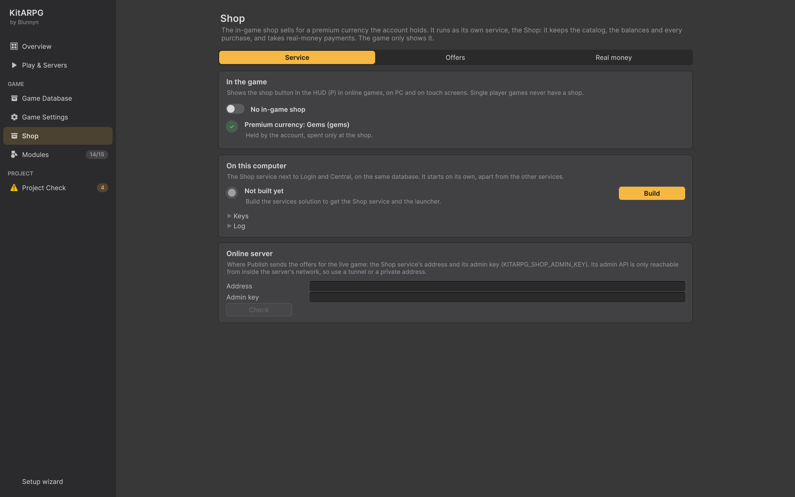

Página Shop
La página Shop maneja la tienda del juego desde el editor. La tienda del juego vende ítems por una moneda premium que guarda la cuenta, como Gems. Corre como su propio servicio, el servicio Shop, que guarda el catálogo, los saldos y cada compra, y recibe los pagos con dinero real; el juego solo la muestra. Esta página prende la tienda, inicia el servicio Shop en tu computadora, edita sus ofertas y productos, y los publica en tu servidor en vivo.
Dónde está
- KitARPG > Shop, o
- la página Shop de la ventana KitARPG (
Ctrl/Cmd+Shift+K).
La barra lateral muestra On junto a ella cuando el servicio Shop de tu computadora responde.
Antes de empezar
- La tienda es para juegos MMO. Los juegos de un jugador nunca tienen tienda.
- El servicio Shop debe estar en el proyecto: la carpeta
Shopdel código de los servicios. Si no está, la página solo muestra The Shop service isn't in this project con la carpeta donde buscó, y el juego no tiene botón de tienda. - La base de datos del juego necesita una moneda premium: una moneda con Premium marcado. La muestra Starter tiene Gems.
- Los prefabs de jugador necesitan el componente Player Shop, y el HUD necesita la ventana de la tienda. Las actualizaciones del kit agregan los dos a juegos más viejos. Consulta Actualizar el kit.
Las pestañas

La página tiene tres pestañas: Service, Offers y Real money. La última pestaña que usaste se recuerda durante la sesión del editor. Los mensajes de la última acción (guardado, publicado, rechazado) aparecen bajo las pestañas, con los problemas en líneas rojas.
Pestaña Service
In the game
"Shows the shop button in the HUD (P) in online games, on PC and on touch screens. Single player games never have a shop." (muestra el botón de la tienda en el HUD en juegos en línea).
Un interruptor con The game has an in-game shop o No in-game shop. Prende o apaga a la vez el módulo In-game shop y la tienda en la configuración del lanzador, que les da a los servidores de mapa la dirección y la clave de la tienda. Apagarlo también detiene el servicio Shop en esta computadora. Prenderlo también prende Mail, que la tienda necesita.
Bajo el interruptor, filas de estado:
| Fila | Significa | Solución |
|---|---|---|
| No game database | No se encontró ninguna base de datos | Elige una en Game Database |
| No premium currency | Ninguna moneda tiene Premium marcado; las ofertas cobran en ella | Marca Premium en una moneda, o aplica la actualización de abajo para agregar Gems |
| Premium currency for the shop, Shop on the player prefabs, Shop window in the HUD | Actualizaciones del kit que necesita la tienda y que tu juego todavía no tiene | Apply |
| Premium currency: Gems (gems) | Las monedas premium encontradas. "Held by the account, spent only at the shop." | Nada que hacer |
On this computer
"The Shop service next to Login and Central, on the same database. It starts on its own, apart from the other services." (el servicio Shop junto a Login y Central, sobre la misma base de datos; inicia por su cuenta).
| Estado | Detalle | Botón |
|---|---|---|
| Not built yet | Compila la solución de los servicios para tener el servicio Shop y el lanzador | Build compila los servicios. Si falla, el error va a la Console |
| Stopped | Inicia en http://127.0.0.1:5300 con el catálogo en UserSettings/KitARPG/shop-conf.json |
Start the shop |
| Starting | Esperando a que el servicio responda | Stop |
| Running | "Answering at http://127.0.0.1:5300. Saved offers go live here right away." | Stop |
Start the shop prende la tienda en el juego si estaba apagada, se asegura de que el puerto esté libre, copia el catálogo de muestra que viene con el servicio cuando todavía no tienes uno, e inicia el lanzador en modo solo tienda. Si Login y Central ya corren, te dice que los reinicies para que los servidores de mapa que lanzan encuentren la tienda; Play en el editor la encuentra enseguida. Si el puerto está ocupado, el mensaje dice que detengas lo que lo usa o cambies ShopPort en UserSettings/KitARPG/launcher.json.
El servicio Shop se detiene solo cuando sales de Unity.
Dos desplegables:
- Keys: la Map key (la que los servidores de mapa le muestran a Shop) y la Admin key (la que usa esta página para publicar), cada una con Copy. Solo se muestran los primeros cuatro caracteres. "Made for this computer and kept in UserSettings, out of version control. The live server uses its own."
- Log: las últimas 30 líneas de
UserSettings/KitARPG/shop.log.
Online server
"Where Publish sends the offers for the live game: the Shop service's address and its admin key (KITARPG_SHOP_ADMIN_KEY). Its admin API is only reachable from inside the server's network, so use a tunnel or a private address." (adónde envía Publish las ofertas del juego en vivo; su API de administración solo se alcanza desde la red del servidor, así que usa un túnel o una dirección privada).
| Campo | Qué es |
|---|---|
| Address | La dirección del servicio Shop en vivo, por ejemplo a través de un túnel SSH |
| Admin key | La clave de administración del servicio en vivo, oculta mientras escribes |
Check le pide su estado a la dirección y dice si responde. Los dos valores se guardan en UserSettings/KitARPG/shop-remote.json, fuera del proyecto, así que la clave nunca llega al control de versiones.
Pestaña Offers
La barra de publicación
Arriba de las pestañas Offers y Real money:
| Elemento | Qué hace |
|---|---|
| Etiqueta | Unsaved changes, Live on this computer (guardado y la tienda local corre) o Saved |
| Revert | Descarta los cambios sin guardar y carga el catálogo guardado. En gris sin cambios |
| Save | Revisa el catálogo y lo escribe en UserSettings/KitARPG/shop-conf.json. Una tienda local en marcha lo recarga en el acto. En gris sin cambios |
| Pull from server | Carga en la página el catálogo del servidor en línea. Pregunta antes si tienes cambios sin guardar. Guarda después para tenerlo también en esta computadora |
| Publish to server | Revisa el catálogo, pregunta "Replace every offer on ... with these N? Players see them at once." y lo envía al servidor en línea |
Pull y Publish aparecen en gris hasta que se ponen la dirección y la clave de administración del servidor en línea. Sin dirección, una línea bajo la barra explica que Save guarda las ofertas en esta computadora.
Save y Publish rechazan un catálogo con problemas y los listan en rojo. El servidor revisa el catálogo otra vez y no cambia nada salvo que todas las ofertas pasen; cuando lo rechaza, la página dice "The server refused the catalog and kept the one it had." con sus razones. Cuando lo acepta, dice "Published N offers to ... (version ...)."
La lista de ofertas
La tarjeta Offers lista cada oferta: el ícono, el nombre, la categoría y el id, el precio con su moneda, y una etiqueta de estado:
| Estado | Significa |
|---|---|
| On sale | Se vende ahora |
| Scheduled | Su fecha de inicio está en el futuro |
| Ended | Su fecha de fin ya pasó |
| Hidden | Se guarda por su historial, no se vende |
| Problem | Algo en ella está mal; ábrela para ver qué |
Haz clic en una oferta para abrirla bajo la lista; haz clic otra vez para cerrarla. Botones bajo la lista:
| Botón | Qué hace |
|---|---|
| Add offer | Agrega "New Offer" con el id new_offer (o new_offer_2...), la primera moneda premium y un precio de 100 |
| Duplicate | Copia la oferta abierta con un id nuevo y " (copy)" después de su nombre |
| Move up, Move down | Mueve la oferta abierta en la lista |
| Delete | Pregunta antes. Para dejar de vender una oferta pero conservarla, marca Hidden en su lugar |
Campos de la oferta
"The id never changes once players bought it: limits and history count by it." (el id nunca cambia una vez que los jugadores la compraron: los límites y el historial cuentan por él).
| Campo | Qué hace | Por defecto |
|---|---|---|
| Id | En minúsculas, sin espacios, hasta 64 caracteres. Nunca reutilices uno para otra cosa | Obligatorio |
| Name | Se muestra en la tarjeta | |
| Description | Se muestra en la página de la oferta | |
| Category | La pestaña bajo la que aparece en el juego | Featured |
| Currency | Una moneda premium de la base de datos del juego | Primera moneda premium |
| Price | Mayor que 0 | Obligatorio |
| Icon | Ítem cuyo ícono muestra la tarjeta. Vacío usa el del primer ítem | Vacío |
| Badge | Cinta en la esquina de la tarjeta, como New o Sale, hasta 24 caracteres. Vacío no tiene; las ofertas que terminan muestran Limited time | Vacío |
| Order | El menor va primero cuando la tienda se ordena por relevancia | 0 |
| Picture | Imagen de la tarjeta y de la página de la oferta. Vacío dibuja el ícono | Vacío |
| Banner | Imagen ancha. Las ofertas que tienen una se turnan en el banner de la primera página de la tienda | Vacío |
Items: una fila por cada ítem que da la oferta, con el ícono del ítem, el campo del ítem, la cantidad (al menos 1) y ✕ para quitarlo. Add item agrega una fila. Una oferta necesita al menos un ítem. Un ítem que la base de datos no tiene muestra "'id' not in the database".
Sale
| Campo | Qué hace | Por defecto |
|---|---|---|
| Starts | Fecha y hora UTC, como 2026-12-24T18:00:00Z. Vacío es siempre. Al lado se muestra la hora local que significa. Now pone la hora actual |
Vacío |
| Ends | Mismo formato. Debe ser después de Starts | Vacío |
| Per account | Cuántas veces puede comprarla una cuenta. 0 es sin límite | 0 |
| Giftable | Los jugadores pueden comprarla para otro personaje; llega por correo | Prendido |
| Hidden | No se vende, pero se guarda por su historial | Apagado |
Los problemas de la oferta aparecen en rojo al pie de su tarjeta.
Imágenes
Las imágenes y los banners son sprites. El catálogo es texto, así que la oferta solo guarda una clave y el sprite vive en el asset Shop Art del Game Instance. La primera vez que eliges una imagen, la página crea ShopArt.asset junto al prefab de red y lo pone en Game Settings. Una clave sin sprite muestra "'key' not in the shop art". Las imágenes viajan con la build del juego, así que las imágenes nuevas necesitan una build nueva del cliente; las ofertas no.
Pestaña Real money
Productos
"What one unit of a product bought with real money gives. The id is the one your payment provider sends (Stripe's metadata.product, or your web shop's)." (lo que da una unidad de un producto comprado con dinero real; el id es el que envía tu proveedor de pagos).
Cada fila: el id del producto, "gives", la cantidad, la moneda premium y ✕. Add product agrega una fila como gems_100 que da 100 de la primera moneda premium. Un producto necesita un id, una cantidad mayor que 0 y una moneda premium, y los ids deben ser únicos.
Cartas
"Bought items always arrive by mail, gifts too." (los ítems comprados siempre llegan por correo, también los regalos).
| Campo | Qué hace | Por defecto |
|---|---|---|
| Sender | De quién vienen las cartas con los ítems comprados | Shop |
| Days to collect | Pasado este plazo, la carta y sus ítems desaparecen. De 1 a 365 | 30 |
Si los ítems comprados van directo a la bolsa lo define Shop Auto Take en Game Settings.
Paso a paso: correr la tienda en local
- En Play & Servers, elige MMO, compila los servicios e inícialos.
- Abre KitARPG > Shop, pestaña Service. Aplica las actualizaciones del kit para la tienda que aparezcan.
- Prende el interruptor de In the game.
- Presiona Start the shop. Espera a que diga Running.
- Presiona Restart en Play & Servers para que los servidores de mapa que lanza encuentren la tienda.
- Presiona ▶ Play client, entra al mundo y presiona
Ppara abrir la tienda. Date moneda premium para probar una compra con el comando de GM/currency gems 1000(nivel Admin). Consulta Comandos de GM.
Paso a paso: publicar el catálogo
- En la pestaña Offers, agrega o edita ofertas. Revisa que ninguna muestre Problem.
- En la pestaña Real money, define tus productos y cartas.
- Presiona Save. La tienda local, si corre, usa el catálogo nuevo en el acto. Pruébalo en Play.
- En la pestaña Service, completa Online server: la dirección de tu servicio Shop en vivo, alcanzable por un túnel o una dirección privada, y su clave de administración (
KITARPG_SHOP_ADMIN_KEYen el servidor). Presiona Check. - De vuelta en Offers, presiona Publish to server y confirma. Los jugadores ven las ofertas nuevas en el acto; no hace falta build ni reinicio.
Presiona Pull from server antes de editar cuando otra persona pudo cambiar el catálogo en vivo. Publicar reemplaza todas las ofertas del servidor.
Nunca pongas la clave de administración en vivo en un archivo dentro de Assets ni en el control de versiones. Por eso la página la guarda en UserSettings/KitARPG/shop-remote.json.
Un jugador y MMO
La tienda existe solo en juegos MMO. En un jugador, el interruptor y el módulo no tienen efecto y el botón de la tienda nunca aparece.
Errores comunes
- Cambiar el id de una oferta después de venderla. Los límites de compra y el historial cuentan por id. Crea una oferta nueva y oculta la vieja.
- El botón de la tienda no aparece. El módulo está apagado, al prefab de jugador le falta Player Shop, al HUD le falta la ventana de la tienda, o el servidor de mapa no alcanza al servicio Shop. Aplica las actualizaciones del kit y reinicia los servicios después de iniciar la tienda.
- Vender un ítem de misión. Project Check avisa.
- Las imágenes no aparecen en un cliente compilado. El asset Shop Art con los sprites nuevos tiene que estar en la build del cliente.